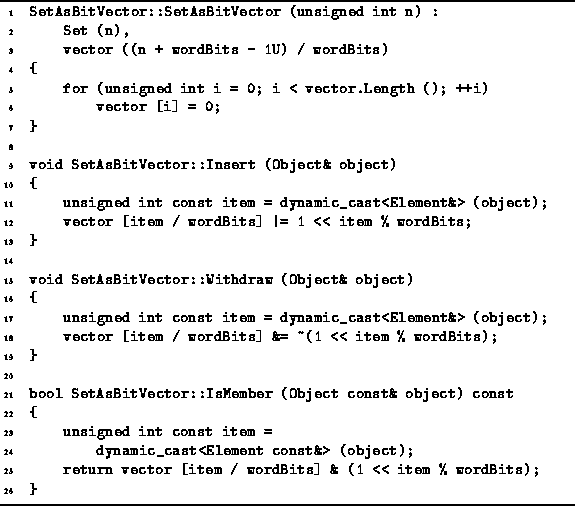

Data Structures and Algorithms
with Object-Oriented Design Patterns in C++
Data Structures and Algorithms
with Object-Oriented Design Patterns in C++
Program  defines the constructor for the SetAsBitVector
class as well as the three basic operations--Insert, IsMember, and Withdraw.
The constructor takes a single argument
defines the constructor for the SetAsBitVector
class as well as the three basic operations--Insert, IsMember, and Withdraw.
The constructor takes a single argument
 ,
which specifies the universe and, consequently,
the number of bits needed in the bit array.
The constructor creates a vector of Words of length
,
which specifies the universe and, consequently,
the number of bits needed in the bit array.
The constructor creates a vector of Words of length  ,
where is the number of bits in a word,
and sets the elements of the vector to zero.
The running time of the constructor is
,
where is the number of bits in a word,
and sets the elements of the vector to zero.
The running time of the constructor is  .
.

Program: SetAsBitVector Class Constructor, Insert, Withdraw and IsMember Member Function Definitions
To insert an item into the set,
we need to change the appropriate bit in the array of bits to one.
The  bit of the bit array
is bit
bit of the bit array
is bit  of word
of word  .
Thus, the Insert function is implemented using
a bitwise or operation to change the
.
Thus, the Insert function is implemented using
a bitwise or operation to change the  bit to one
as shown in Program .
Even though it is slightly more complicated than the corresponding operation
for the SetAsArray class,
the running time for this operation is still O(1).
Since is a power of two,
it is possible to replace the division and modulo operations,
/ and %,
with shifts and masks like this:
bit to one
as shown in Program .
Even though it is slightly more complicated than the corresponding operation
for the SetAsArray class,
the running time for this operation is still O(1).
Since is a power of two,
it is possible to replace the division and modulo operations,
/ and %,
with shifts and masks like this:
vector [item >> shift] |= 1 << (item & mask);for a suitable definition of the constants shift and mask. Depending on the compiler and machine architecture, doing so may improve the performance of the Insert operation by a constant factor. Of course, its asymptotic performance is still O(1).
To withdraw an item from the set,
we need to clear the appropriate bit in the array of bits
and to test if an item is a member of the set,
we test the corresponding bit.
The IsMember and Withdraw routines in Program
show how this can be done.
Like Insert,
both these routines have constant worst-case running times.
 Copyright © 1997 by Bruno R. Preiss, P.Eng. All rights reserved.
Copyright © 1997 by Bruno R. Preiss, P.Eng. All rights reserved.